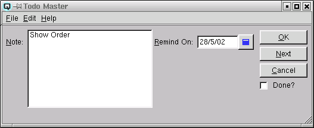

| Table of Contents | Quasar Commands | Up: Card File | Previous: To Do List | Next: Card Adjustment |
The to do master is a tool for tracking tasks that need to be completed by a specific date or time.

The to do message defining the task to be done. As the first part of the message displays in the todo list you may want to begin your message with a short description.
The date the task is to be completed.
Toggle on or off. Toggle on if the task is done. Toggle off if the task is not yet completed.
| Table of Contents | Quasar Commands | Up: Card File | Previous: To Do List | Next: Card Adjustment |